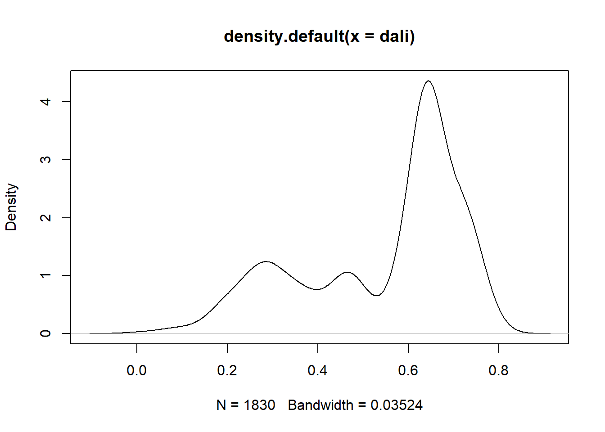
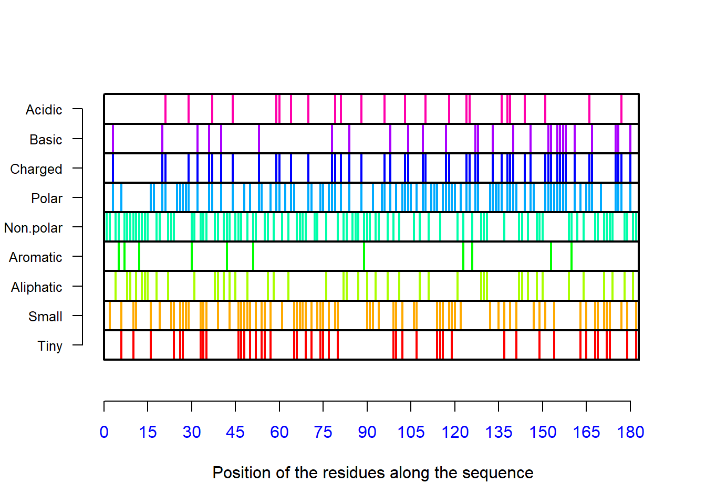
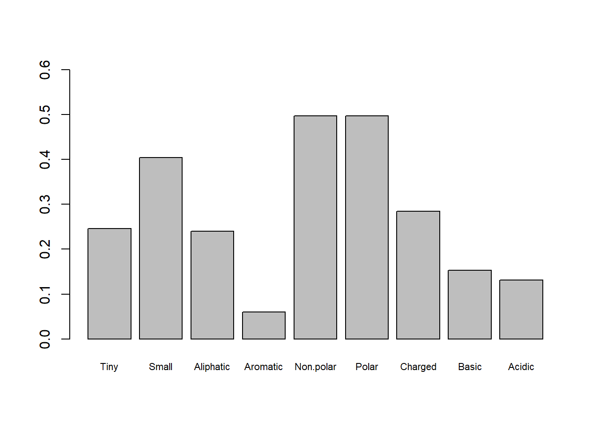
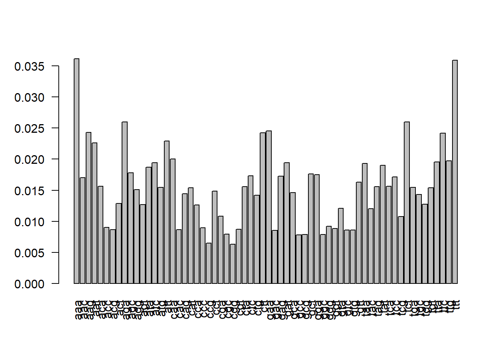
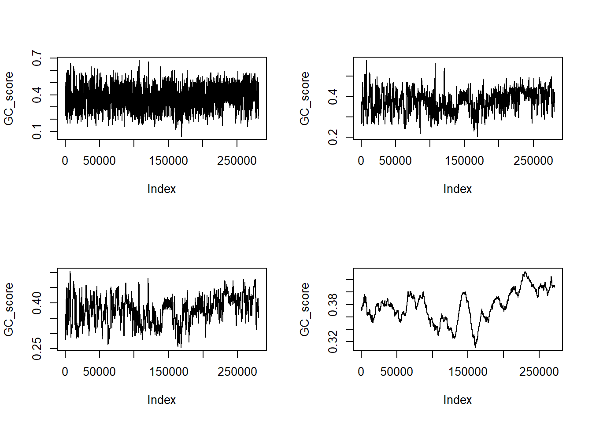
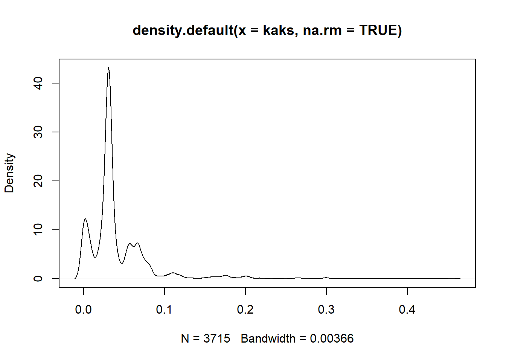

# install.packages("seqinr")#installing
library(seqinr)#loading the package in the current sessionUsage: . split a sequence to number of non-overlapping subsequences of a certain size starting at a certain frame Questions: . given a coding DNA/RNA sequence, what are the codons in starting at the first frame
size <- 3 # size of the subsequence
frame_n <- 0 #the starting position to split(0,1,2)
splitseq(seq = s2c("acggattagctagtttggc"), frame = frame_n, word = size)## [1] "acg" "gat" "tag" "cta" "gtt" "tgg"translate(seq = s2c("cagtacgtagacg"),frame = 0, sens = "R")## [1] "R" "L" "R" "T"seqAA <- read.fasta(file=system.file("sequences/seqAA.fasta", package ="seqinr"),
seqtype = "AA",
set.attributes = F)
getSequence(seqAA)## [[1]]
## [1] "M" "P" "R" "L" "F" "S" "Y" "L" "L" "G" "V" "W" "L" "L" "L" "S" "Q"
## [18] "L" "P" "R" "E" "I" "P" "G" "Q" "S" "T" "N" "D" "F" "I" "K" "A" "C"
## [35] "G" "R" "E" "L" "V" "R" "L" "W" "V" "E" "I" "C" "G" "S" "V" "S" "W"
## [52] "G" "R" "T" "A" "L" "S" "L" "E" "E" "P" "Q" "L" "E" "T" "G" "P" "P"
## [69] "A" "E" "T" "M" "P" "S" "S" "I" "T" "K" "D" "A" "E" "I" "L" "K" "M"
## [86] "M" "L" "E" "F" "V" "P" "N" "L" "P" "Q" "E" "L" "K" "A" "T" "L" "S"
## [103] "E" "R" "Q" "P" "S" "L" "R" "E" "L" "Q" "Q" "S" "A" "S" "K" "D" "S"
## [120] "N" "L" "N" "F" "E" "E" "F" "K" "K" "I" "I" "L" "N" "R" "Q" "N" "E"
## [137] "A" "E" "D" "K" "S" "L" "L" "E" "L" "K" "N" "L" "G" "L" "D" "K" "H"
## [154] "S" "R" "K" "K" "R" "L" "F" "R" "M" "T" "L" "S" "E" "K" "C" "C" "Q"
## [171] "V" "G" "C" "I" "R" "K" "D" "I" "A" "R" "L" "C" "*"getLength(getSequence(seqAA))## [1] 183a <- ("cgtagaaatgcgcgc")
c <- ("cgtggggtaaatcctgc")
b <- ("gtgtccccaaaaagt")
seqs <- list(a,b,c)
seqs <- mapply(s2c, seqs)
nth_base <- function(n, seq){#returns the nth base in a sequence
x <- seq[n]
return(x)
}
mapply(nth_base,2,seqs)## [1] "g" "t" "g"genbankfile <- system.file("sequences/ct.gbk.gz", package = "seqinr")
fastafilename <- "Acinetobacter_ADP1_uid6159.fasta"
gb2fasta(genbankfile, fastafilename)
readLines(fastafilename)[1:5]## [1] ">CHLTCG 1042519 bp"
## [2] "gcggccgcccgggaaattgctaaaagatgggagcaaagagttagagatctacaagataaa"
## [3] "ggtgctgcacgaaaattattaaatgatcctttaggccgacgaacacctaattatcagagc"
## [4] "aaaaatccaggtgagtatactgtagggaattccatgttttacgatggtcctcaggtagcg"
## [5] "aatctccagaacgtcgacactggtttttggctggacatgagcaatctctcagacgttgta"seq <- "acgtacgta"
charc <- s2c(seq)
c2s(charc)## [1] "acgtacgta"carps <- read.alignment("../molecular_data_analysis_using_r/MDAuR-master/Chapter_02/data/vertebrate_CARPs.aln",format="clustal")
dali <- dist.alignment(carps,matrix = "identity")
density(dali)##
## Call:
## density.default(x = dali)
##
## Data: dali (1830 obs.); Bandwidth 'bw' = 0.03524
##
## x y
## Min. :-0.1057 Min. :0.000211
## 1st Qu.: 0.1490 1st Qu.:0.091496
## Median : 0.4038 Median :0.775760
## Mean : 0.4038 Mean :0.980402
## 3rd Qu.: 0.6585 3rd Qu.:1.162743
## Max. : 0.9133 Max. :4.362500plot(density(dali))#distribution of values in pairwise-distance matrix
comp(s2c("acgt"))## [1] "t" "g" "c" "a"rev(comp(s2c("acgt")))#reverse complement sequence## [1] "a" "c" "g" "t"file_name_fa <- "Acinetobacter_ADP1_uid6159.fasta" #name of a fasta file in the current directory
fastafile <- read.fasta(file = file_name_fa,
as.string = TRUE,
set.attributes = FALSE,
seqtype = "DNA"
)-This function plots and calculates simple sequence statistics and physico-chemical characterstics of a sequence of amino acids
seqAA <- read.fasta(file=system.file("sequences/seqAA.fasta", package ="seqinr"),
seqtype = "AA",
set.attributes = F
)
AAstat(seq = seqAA[[1]], plot = TRUE)## $Compo
##
## * A C D E F G H I K L M N P Q R S T V W Y
## 1 8 6 6 18 6 8 1 9 14 29 5 7 10 9 13 16 7 6 3 1
##
## $Prop
## $Prop$Tiny
## [1] 0.2459016
##
## $Prop$Small
## [1] 0.4043716
##
## $Prop$Aliphatic
## [1] 0.2404372
##
## $Prop$Aromatic
## [1] 0.06010929
##
## $Prop$Non.polar
## [1] 0.4972678
##
## $Prop$Polar
## [1] 0.4972678
##
## $Prop$Charged
## [1] 0.284153
##
## $Prop$Basic
## [1] 0.1530055
##
## $Prop$Acidic
## [1] 0.1311475
##
##
## $Pi
## [1] 8.534902names(AAstat(seq = seqAA[[1]], plot = TRUE))
## [1] "Compo" "Prop" "Pi"AAstat(seq = seqAA[[1]], plot = FALSE)$Pi #calculates theoretical isoelectric points## [1] 8.534902barplot(unlist(AAstat(seq = seqAA[[1]], plot = FALSE)$Prop),ylim = c(0,0.6),cex.names = 0.7) ####3-a() and aaa():converts amico acid three letter code into single letter, and vice versa.
one_aa <- a("Ala")
three_aa <- aaa("A")computePI(seqAA[[1]])## [1] 8.534902fs <- read.fasta(file = system.file("sequences/someORF.fsa", package = "seqinr"),
seqtype = "DNA")
count(s2c("acgttttcgggttaaa"),wordsize = 3, alphabet = c("g","a","t","c"))##
## aaa aac aag aat aca acc acg act aga agc agg agt ata atc atg att caa cac
## 1 0 0 0 0 0 1 0 0 0 0 0 0 0 0 0 0 0
## cag cat cca ccc ccg cct cga cgc cgg cgt cta ctc ctg ctt gaa gac gag gat
## 0 0 0 0 0 0 0 0 1 1 0 0 0 0 0 0 0 0
## gca gcc gcg gct gga ggc ggg ggt gta gtc gtg gtt taa tac tag tat tca tcc
## 0 0 0 0 0 0 1 1 0 0 0 2 1 0 0 0 0 0
## tcg tct tga tgc tgg tgt tta ttc ttg ttt
## 1 0 0 0 0 0 1 1 0 2count(fs[[1]], wordsize = 1, alphabet = c("g", "t", "a", "c"))/getLength(fs[[1]])#proportion of each nucleutide in a sequence##
## a c g t
## 0.3520545 0.1613135 0.1918177 0.2948143file_name_fa <- "Acinetobacter_ADP1_uid6159.fasta"
fastafile <- read.fasta(file = file_name_fa,
as.string = FALSE,
set.attributes = FALSE,
seqtype = "DNA"
)
codon_freq <- count(fastafile[[1]], wordsize = 3, alphabet = c("a", "c", "g", "t"))
codon_prop <- codon_freq/sum(codon_freq)
barplot(codon_prop, las = 2)#plot the the frequency of codons on the sequence
#read the fasta file
hm_ttn_fa <- read.fasta(file = "../molecular_data_analysis_using_r/MDAuR-master/Chapter_02/data/human_ttn_genomic_dna.fasta",seqtype = "DNA",strip.desc = TRUE)
#extract the sequecne only for further analysis
hm_ttn_seq_1 <- hm_ttn_fa[[1]]
#..or
hm_ttn_seq_2 <- getSequence(hm_ttn_fa)
class(hm_ttn_seq_1)## [1] "SeqFastadna"#find the frequency and proportion each base in the sequence
#frequency
table(hm_ttn_seq_1)## hm_ttn_seq_1
## a c g t
## 90298 53047 53316 84774#..or
count(hm_ttn_seq_2[[1]],wordsize = 1, alphabet = c("a", "c", "g"))##
## a c g
## 90298 53047 53316#probortion
table(hm_ttn_seq_1)/length(hm_ttn_seq_1)## hm_ttn_seq_1
## a c g t
## 0.3208485 0.1884876 0.1894434 0.3012205#..or
count(hm_ttn_seq_1,wordsize = 1, alphabet = c("a", "c", "g")) /getLength(hm_ttn_seq_1)##
## a c g
## 0.3208485 0.1884876 0.1894434myseq1 <- "attcgcgcgcg"
myseq2 <- "cttgcg"
myseq3 <- paste0(myseq2,"ssss")
GC(s2c(myseq2))==GC(s2c(myseq3))## [1] TRUEGC(s2c(myseq2), exact = FALSE)==GC(s2c(myseq3), exact = TRUE)## [1] FALSEwin.size <- 100
GC_score <- vector()
k <- 1
for (i in k:(length(hm_ttn_seq_1)-win.size)){
GC_score[i] <- GC(hm_ttn_seq_1[i:(i+win.size)])
}
par(mfrow=c(2,2))
for (win.size in c( 100, 500, 1000, 10000)){
GC_score <- vector()
for (i in k:(length(hm_ttn_seq_1)-win.size)){
GC_score[i] <- GC(hm_ttn_seq_1[i:(i+win.size)])
}
plot(GC_score, type = "l")
}
par(mfrow=c(1,1))getLength(seqAA)## [1] 183ff <- system.file("sequences/someORF.fsa", package = "seqinr")
fs <- read.fasta(ff)
getLength(fs)#length of fasta enteries## [1] 5573 5825 2987 3929 2648 2597 2780getLength.SeqFastaAA(fs)#number of fasta enteries## [1] 7headers <- getAnnot(fs)#get sequence header
entry_index <- grep("reverse complement", headers)#find "reverse complement" sequences
rev_seq <- fs[entry_index]#select "reverse complement" sequence all(names(fs)==getName(fs))## [1] TRUEseq_index<- which(getLength(fs)==min(getLength(fs)))#select the shortest sequence
getTrans(fs[[seq_index]])## [1] "V" "S" "G" "P" "R" "R" "R" "S" "T" "S" "K" "T" "S" "S" "A" "K" "N"
## [18] "I" "R" "N" "S" "S" "N" "I" "S" "P" "A" "S" "M" "I" "F" "R" "N" "L"
## [35] "L" "I" "L" "E" "D" "D" "L" "R" "R" "Q" "A" "H" "E" "Q" "K" "I" "L"
## [52] "K" "W" "Q" "F" "T" "L" "F" "L" "A" "S" "M" "A" "G" "V" "G" "A" "F"
## [69] "T" "F" "Y" "E" "L" "Y" "F" "T" "S" "D" "Y" "V" "K" "G" "L" "H" "R"
## [86] "V" "I" "L" "Q" "F" "T" "L" "S" "F" "I" "S" "I" "T" "V" "V" "L" "F"
## [103] "H" "I" "S" "G" "Q" "Y" "R" "R" "T" "I" "V" "I" "P" "R" "R" "F" "F"
## [120] "T" "S" "T" "N" "K" "G" "I" "R" "Q" "F" "N" "V" "K" "L" "V" "K" "V"
## [137] "Q" "S" "T" "W" "D" "E" "K" "Y" "T" "D" "S" "V" "R" "F" "V" "S" "R"
## [154] "T" "I" "A" "Y" "C" "N" "I" "Y" "C" "L" "K" "K" "F" "L" "W" "L" "K"
## [171] "D" "D" "N" "A" "I" "V" "K" "F" "W" "K" "S" "V" "T" "I" "Q" "S" "Q"
## [188] "P" "R" "I" "G" "A" "V" "D" "V" "K" "L" "V" "L" "N" "P" "R" "A" "F"
## [205] "S" "A" "E" "I" "R" "E" "G" "W" "E" "I" "Y" "R" "D" "E" "F" "W" "A"
## [222] "R" "E" "G" "A" "R" "R" "R" "K" "Q" "A" "H" "E" "L" "R" "P" "K" "S"
## [239] "E" "*" "K" "S" "W" "R" "A" "S" "S" "F" "E" "*" "E" "V" "I" "F" "T"
## [256] "Y" "V" "K" "L" "*" "P" "S" "M" "F" "T" "H" "K" "L" "Y" "F" "I" "H"
## [273] "Y" "*" "K" "*" "S" "C" "C" "V" "V" "K" "I" "L" "Q" "I" "R" "H" "F"
## [290] "I" "F" "K" "F" "S" "N" "K" "C" "*" "K" "T" "*" "G" "L" "L" "K" "L"
## [307] "V" "K" "Q" "G" "I" "L" "L" "Y" "I" "Q" "Q" "H" "N" "A" "R" "G" "A"
## [324] "R" "R" "K" "N" "L" "K" "*" "*" "V" "*" "N" "D" "F" "G" "F" "*" "Y"
## [341] "A" "T" "V" "G" "V" "S" "*" "F" "E" "C" "W" "E" "A" "H" "V" "Q" "E"
## [358] "R" "P" "L" "M" "E" "V" "*" "C" "R" "Q" "*" "I" "R" "K" "A" "L" "N"
## [375] "S" "L" "C" "R" "V" "R" "R" "C" "W" "H" "S" "C" "W" "W" "L" "L" "L"
## [392] "D" "E" "S" "P" "A" "F" "*" "V" "D" "I" "Q" "*" "F" "F" "R" "G" "S"
## [409] "C" "Q" "T" "T" "G" "S" "L" "G" "T" "N" "C" "G" "Q" "Q" "Y" "G" "N"
## [426] "Y" "R" "G" "K" "E" "E" "Q" "N" "K" "*" "S" "Q" "A" "D" "V" "F" "G"
## [443] "I" "I" "I" "R" "C" "C" "F" "R" "S" "Y" "G" "G" "*" "D" "I" "N" "F"
## [460] "V" "Y" "V" "C" "R" "Y" "Y" "K" "H" "A" "S" "L" "*" "M" "V" "T" "V"
## [477] "Q" "G" "M" "D" "S" "H" "*" "F" "E" "K" "Y" "Q" "I" "C" "N" "C" "F"
## [494] "E" "R" "C" "R" "L" "E" "E" "T" "A" "Y" "*" "W" "V" "I" "G" "Y" "R"
## [511] "I" "H" "G" "F" "*" "S" "I" "L" "Y" "I" "E" "F" "R" "I" "S" "K" "F"
## [528] "K" "C" "*" "Q" "M" "S" "K" "T" "N" "D" "Q" "I" "*" "T" "R" "V" "I"
## [545] "F" "F" "R" "F" "I" "L" "F" "Y" "F" "W" "Y" "F" "I" "Y" "P" "I" "Q"
## [562] "*" "I" "Y" "I" "G" "L" "R" "K" "K" "K" "K" "S" "R" "R" "I" "*" "T"
## [579] "*" "L" "C" "S" "I" "L" "R" "T" "Y" "I" "F" "R" "R" "L" "K" "S" "S"
## [596] "*" "T" "*" "F" "F" "*" "R" "P" "V" "K" "R" "N" "*" "I" "S" "R" "T"
## [613] "W" "A" "I" "L" "I" "T" "A" "M" "I" "M" "I" "I" "N" "I" "D" "N" "Q"
## [630] "V" "N" "L" "D" "S" "V" "E" "L" "T" "V" "D" "M" "F" "L" "H" "S" "L"
## [647] "A" "L" "K" "*" "F" "K" "V" "F" "V" "I" "L" "F" "K" "F" "L" "S" "I"
## [664] "S" "S" "T" "A" "L" "L" "A" "I" "M" "S" "S" "L" "L" "T" "S" "A" "S"
## [681] "C" "S" "S" "V" "K" "V" "F" "S" "F" "S" "S" "V" "I" "S" "T" "F" "F"
## [698] "N" "A" "V" "P" "*" "L" "L" "E" "K" "Q" "K" "V" "Y" "F" "P" "T" "P"
## [715] "N" "D" "F" "N" "K" "K" "S" "E" "Y" "F" "F" "C" "F" "S" "L" "V" "I"
## [732] "T" "D" "P" "S" "G" "A" "V" "I" "S" "K" "S" "I" "S" "K" "L" "P" "P"
## [749] "V" "R" "T" "W" "*" "P" "T" "A" "R" "E" "S" "S" "S" "V" "T" "I" "S"
## [766] "*" "Y" "R" "H" "S" "L" "L" "N" "A" "G" "K" "L" "I" "A" "T" "G" "A"
## [783] "*" "L" "E" "D" "A" "A" "T" "E" "L" "T" "N" "A" "K" "I" "K" "T" "M"
## [800] "K" "K" "E" "G" "R" "A" "I" "V" "D" "L" "I" "M" "V" "F" "L" "Y" "N"
## [817] "E" "C" "T" "P" "L" "F" "I" "L" "F" "*" "F" "G" "S" "P" "D" "A" "E"
## [834] "L" "A" "V" "S" "I" "P" "K" "V" "N" "E" "S" "K" "S" "L" "E" "I" "L"
## [851] "L" "V" "F" "H" "F" "N" "*" "F" "K" "F" "W" "Q" "N" "V" "L"pmw(seqAA[[1]])## [1] 20818.05align_file <- system.file("sequences/test.aln", package = "seqinr")
align_seq <- read.alignment(align_file, format = "clustal")
carps<-read.alignment("../molecular_data_analysis_using_r/MDAuR-master/Chapter_02/data/vertebrate_CARPs.aln",format="clustal")
str(carps)## List of 4
## $ nb : num 61
## $ nam: chr [1:61] "Dasypus_novemcinctus_CARP_X" "Xenopus_tropicalis_CARP_X" "Oreochromis_niloticus_CARP_X" "Latimeria_chalumnae_CARP_X" ...
## $ seq:List of 61
## ..$ : chr "------------agagacaaaatcagaaacagtttgagatca---------acagagcctgaa---------------------gagcacaaggtgagggtgctggagagt"| __truncated__
## ..$ : chr "---------------ataaatatttac---------------aaaacactcgaattaacaata---------------------tctatctttgtctttttttatatttta"| __truncated__
## ..$ : chr "------------atggatataatttgggagata------------------ctgatcattctt---------------------caagctaattttattgtttgtatatca"| __truncated__
## ..$ : chr "------------atggaaattatttgggagata------------------atttttattctt---------------------caaactaatttcatcgtgtgcatatca"| __truncated__
## ..$ : chr "------------atggaaatagtctgggaggtg------------------ctttttcttctt---------------------caagccaatttcatcgtctgcatatca"| __truncated__
## ..$ : chr "------------atggaaattgtttgggaggtg------------------ctttttcttctg---------------------caagccaatttcatcgtctgcatttca"| __truncated__
## ..$ : chr "------------atggaaatagtctgggaggtg------------------ctttttcttctt---------------------caagccaatttcatcgtctgcatatca"| __truncated__
## ..$ : chr "------------atggaaattgtttgggaggtg------------------ctttttcttctg---------------------caagctaatttcatcgtctgcatttca"| __truncated__
## ..$ : chr "------------atggaaattgtttgggaggtg------------------ctttttcttctg---------------------caagcgaatttcattgtctgcatttca"| __truncated__
## ..$ : chr "------------atggaaattgtttgggaggtg------------------ctttttcttctg---------------------caagcgaatttcatcgtctgcatttca"| __truncated__
## ..$ : chr "------------atggaaatagtctgggaggtg------------------ctttttctcctt---------------------caagccaatttcatcgtctgcatatca"| __truncated__
## ..$ : chr "------------atggaaatagtctgggaggtg------------------ctttttcttctt---------------------caagccaatttcatcgtctgcatatca"| __truncated__
## ..$ : chr "------------atggaaatagtctgggaggtg------------------ctttttcttctt---------------------caagccaatttcatcgtctgcatatca"| __truncated__
## ..$ : chr "------------atggaaatagtctgggaggtg------------------ctttttcttctt---------------------caagccaatttcatcgtctgcatatca"| __truncated__
## ..$ : chr "------------atggaaatagtctgggaggtg------------------ctttttcttctt---------------------caagccaatttcatcgtctgcatatca"| __truncated__
## ..$ : chr "------------atggaaatagtctgggaggtg------------------ctttttcttctt---------------------caagccaatttcatcgtctgcatatca"| __truncated__
## ..$ : chr "------------atggaaatagtctgggaggtg------------------ctttttcttctt---------------------caagccaatttcatcgtctgcatatca"| __truncated__
## ..$ : chr "------------atggaaatagtctgggaggtg------------------ctttttcttctt---------------------caagccaatttcatcgtctgcatatca"| __truncated__
## ..$ : chr "------------atggaaatagtctgggaggtg------------------ctttttcttctt---------------------caagccaatttcatcgtctgcatatca"| __truncated__
## ..$ : chr "------------atggaaatagtctgggaggtg------------------ctttttcttctt---------------------caagccaatttcatcgtctgcatatca"| __truncated__
## ..$ : chr "------------atggaaatagtctgggaggtg------------------ctttttcttctt---------------------caagccaatttcatcgtctgcatatca"| __truncated__
## ..$ : chr "------------atggaaatagtctgggaggtg------------------ctttttcttctt---------------------caagccaatttcatcgtctgcatatca"| __truncated__
## ..$ : chr "------------atggaaatagtgtgggaggtg------------------ctttttcttctt---------------------caagccaatttcatcgtctgcatatca"| __truncated__
## ..$ : chr "------------atggaaatagtctgggaggtg------------------ctttttcttctt---------------------caagccaatttcatcgtctgcatatca"| __truncated__
## ..$ : chr "---------------gcagagggactcaggagcctaggatatggatcagtggagtttagtgca---------------------ttgtgtgtggtggaaatgaggaagaat"| __truncated__
## ..$ : chr "------------atggagagaatcaggagttgtttaggacacggatcaatggagcttaatgaa---------------------ttgcatgtgatgggggagagggagaac"| __truncated__
## ..$ : chr "---------------------------------------------------------------------------------------------------------------"| __truncated__
## ..$ : chr "---------------------------------------------------------------------------------------------------------------"| __truncated__
## ..$ : chr "---------------------------------------------------------------------------------------------------------------"| __truncated__
## ..$ : chr "---------------------------------------------------------------------------------------------------------------"| __truncated__
## ..$ : chr "---------------gctggaatcaggagcaggtcaggatgtgggttaacagaacctgatgga---------------------ttgtatatgatggggatgaaggtttta"| __truncated__
## ..$ : chr "------------------------atg---aggaccggggtgcatgtggggctttgcctcttg---------------------ggagtcctgacagcaacttgtatggct"| __truncated__
## ..$ : chr "------------atggggggcccggtc---cgcctcagccctccgcgggccctgctcctcggg------------------------------gcggccttaggggccgca"| __truncated__
## ..$ : chr "------------atggggggcccgatg---cgcctcagcccgccccgggccctgctcctcggg------------------------------gctgccctgggagctgca"| __truncated__
## ..$ : chr "caaggggtcactgcaagccttcccggg---atgcggggcacccctcgagcgctggtcctctgg------------------------------gccgcactgggggcggca"| __truncated__
## ..$ : chr "------------atggggggtgcagct---cgtctgagcgcccctcgagcgctggtactctgg------------------------------gcagtactgggggcggca"| __truncated__
## ..$ : chr "------------atggggggtgcggct---cgcctgagcgcccctcaagcgctggtactctgg------------------------------gccgcactgggagcggca"| __truncated__
## ..$ : chr "------------atggggggtgccgct---cgcctgagcgcccctcaagcgctggtactctgg------------------------------gccgcactgggagcggca"| __truncated__
## ..$ : chr "------------atggagggtgccact---cgcctgagcgcccctcgagcgctggtactctgg------------------------------gccgcactcggggcggca"| __truncated__
## ..$ : chr "------------atgggggctgcagct---cgtctgagcgcccctcgagcgctggtactctgg------------------------------gctgcactgggggcagca"| __truncated__
## ..$ : chr "------------atgggggctgcagct---cgtctgagcgcccctcgagcgctggtactctgg------------------------------gctgcactgggggcagca"| __truncated__
## ..$ : chr "------------atgggggctgcagct---cgtctgagcgcccctcgagcgctggtactctgg------------------------------gctgcactgggggcagca"| __truncated__
## ..$ : chr "------------atgggggctgcagct---cgtctgagcgcccctcgagcgctggtactctgg------------------------------gctgcactgggggcagca"| __truncated__
## ..$ : chr "------------atgggggctgcagct---cgtctgagcgcccctcgagcgctggtactctgg------------------------------gctgcactgggggcagca"| __truncated__
## ..$ : chr "------------atggggggtgcagct---cgtctgaacgcccctcgagcgctgctactctgg------------------------------gccgcactgggggcggca"| __truncated__
## ..$ : chr "------------atgggggctgcagct---ggtctgaccgcccctcgagcgctggtactctgg------------------------------gccgcactgggggcggca"| __truncated__
## ..$ : chr "------------atgggggctgcagct---cgtctgagcgcccctcgagcgctggtactctgg------------------------------gctgcactgggggcagca"| __truncated__
## ..$ : chr "------------atggggggtgcagct---cgtctgagcgccccgcgagcgctggtactctgg------------------------------gctgcaatgggggcggca"| __truncated__
## ..$ : chr "------------atgggggttgctgct---cgtctgagcgttcctagggcgctggtactctgg------------------------------gccgcactgggggcggca"| __truncated__
## ..$ : chr "------------atgggggctgcagct---cgtctgagcgcccctcgagcgctggtactctgg------------------------------gctgcactgggggcagca"| __truncated__
## ..$ : chr "------------atgggggttgcagct---cgtctgagcgcccctcgagcgctggtactctgg------------------------------gccgcactgggggcggca"| __truncated__
## ..$ : chr "------------atgggggttgcagct---cgactgagcgcccctcgagcgctggtactctgg------------------------------gccgcactgggggcagca"| __truncated__
## ..$ : chr "------------atgggggctgccgct---cgtctgagcgcccctcgagcgctggtactctgg------------------------------gccgcactgggggcggca"| __truncated__
## ..$ : chr "---------------------------------------------------------------------------------------------------------------"| __truncated__
## ..$ : chr "---------------------------------------------------------------------------------------------------------------"| __truncated__
## ..$ : chr "---------------------------------------------------------------------------------------------------------------"| __truncated__
## ..$ : chr "---------------------------------------------------------------------------------------------------------------"| __truncated__
## ..$ : chr "---------------------------------atggagctgctgcaggccctctgctgtacg------------------------ctgctcctgcttttggcccggatg"| __truncated__
## ..$ : chr "---------------------------------atggagctgctgcaggccctctgctgtacg------------------------ctgctcctgcttttggcccggatg"| __truncated__
## ..$ : chr "------------------------atgccgtcgccaggacaccacacatcattctgctgctccacggcaggatttatcgcttgctcagcaatcgttctgctttgcagttcc"| __truncated__
## ..$ : chr "------------------------atgccgtcgccaggacaccacacatcattctgctgctccacggcaggatttatcgcttgctcagcaatcgttctgctttgcagttcc"| __truncated__
## $ com: logi NA
## - attr(*, "class")= chr "alignment"carps$nb## [1] 61carps$nam## [1] "Dasypus_novemcinctus_CARP_X"
## [2] "Xenopus_tropicalis_CARP_X"
## [3] "Oreochromis_niloticus_CARP_X"
## [4] "Latimeria_chalumnae_CARP_X"
## [5] "Rattus_norvegicus_CARP_X"
## [6] "Anolis_carolinensis_CARP_X"
## [7] "Bos_taurus_CARP_X"
## [8] "Pelodiscus_sinensis_CARP_X"
## [9] "Gallus_gallus_CARP_X"
## [10] "Taeniopygia_guttata_CARP_X"
## [11] "Monodelphis_domestica-CA10_CARP_X"
## [12] "Homo_sapiens_CARP_X"
## [13] "Pan_troglodytes_CARP_X"
## [14] "Macaca_mulatta_CARP_X"
## [15] "Pongo_abelii_CARP_X"
## [16] "Nomascus_leucogenys_CARP_X"
## [17] "Callithrix_jacchus_CARP_X"
## [18] "Felis_catus_CARP_X"
## [19] "Canis_familiaris_CARP_X"
## [20] "Ictidomys_tridecemlineatus_CARP_X"
## [21] "Mustela_putorius_furo_CARP_X"
## [22] "Cavia_porcellus_CARP_X"
## [23] "Oryctolagus_cuniculus_CARP_X"
## [24] "Equus_caballus_CARP_X"
## [25] "Pteropus_vampyrus_CARP_X"
## [26] "Tursiops_truncatus_CARP_X"
## [27] "Gadus_morhua_CARP_X"
## [28] "Gasterosteus_aculeatus_CARP_X"
## [29] "Xiphophorus_maculatus_CARP_X"
## [30] "Takifugu_rubripes_CARP_X"
## [31] "Otolemur_garnettii_CARP_X"
## [32] "Anolis_carolinensis_CARP_XI"
## [33] "Sarcophilus_harrisii_CARP_XI"
## [34] "Monodelphis_domestica_CARP_XI"
## [35] "Cavia_porcellus_CARP_XI"
## [36] "Sus_scrofa_CARP_XI"
## [37] "Rattus_norvegicus_CARP_XI"
## [38] "Mus_musculus_CARP_XI"
## [39] "Loxodonta_africana_CARP_XI"
## [40] "Homo_sapiens_CARP_XI"
## [41] "Pan_troglodytes_CARP_XI"
## [42] "Gorilla_gorilla_CARP_XI"
## [43] "Pongo_abelii_CARP_XI"
## [44] "Nomascus_leucogenys_CARP_XI"
## [45] "Tursiops_truncatus_CARP_XI"
## [46] "Otolemur_garnettii_CARP_XI"
## [47] "Callithrix_jacchus_CARP_XI"
## [48] "Ictidomys_tridecemlineatus_CARP_XI"
## [49] "Mustela_putorius_furo_CARP_XI"
## [50] "Macaca_mulatta_CARP_XI"
## [51] "Ailuropoda_melanoleuca_CARP_XI"
## [52] "Felis_catus_CARP_XI"
## [53] "Canis_familiaris_CARP_XI"
## [54] "Xenopus_tropicalis_CARP_XI"
## [55] "Latimeria_chalumnae_CARP_XI"
## [56] "Caenorhabditis_elegans_CARP_X"
## [57] "Caenorhabditis_elegans_CARP_XI"
## [58] "Drosophila_melanogaster_1_CARP_X"
## [59] "Drosophila_melanogaster_1_CARP_XI"
## [60] "Drosophila_melanogaster_2_CARP_X"
## [61] "Drosophila_melanogaster_2_CARP_XI"#carps$seqfile_name_fa <- "Acinetobacter_ADP1_uid6159.fasta"
fastafile <- read.fasta(file = "../molecular_data_analysis_using_r/R_project/Acinetobacter_ADP1_uid6159.fasta",
as.string = TRUE,
set.attributes = FALSE,
seqtype = "DNA"
)nucl.file <- system.file('sequences/bordetella.fasta', package = 'seqinr')
triplet <- read.fasta(nucl.file)
protaln.file <- system.file('sequences/bordetella.pep.aln', package = 'seqinr')
triplet.pep<- read.alignment(protaln.file, format = 'clustal')
reverse.align(nucl.file = nucl.file, protaln.file = protaln.file,
input.format = 'clustal', out.file = 'test.revalign')## NULLres.new <- read.alignment("test.revalign", format = "fasta")protaln.file <- system.file('sequences/bordetella.pep.aln', package = 'seqinr')
triplet.pep<- read.alignment(protaln.file, format = 'clustal')
consensus_seq <- c2s(consensus(triplet.pep))carps.res<-kaks(carps)
kaks<-as.matrix(carps.res$ka/carps.res$ks)
density(kaks,na.rm = TRUE)##
## Call:
## density.default(x = kaks, na.rm = TRUE)
##
## Data: kaks (3715 obs.); Bandwidth 'bw' = 0.00366
##
## x y
## Min. :-0.01098 Min. : 0.0000
## 1st Qu.: 0.10809 1st Qu.: 0.0000
## Median : 0.22715 Median : 0.1164
## Mean : 0.22715 Mean : 2.0983
## 3rd Qu.: 0.34622 3rd Qu.: 0.7050
## Max. : 0.46528 Max. :43.2082plot(density(kaks,na.rm = TRUE))
#choosebank()
#choosebank(bank = "genbank", infobank = TRUE)
ls()## [1] "a" "align_file" "align_seq"
## [4] "b" "c" "carps"
## [7] "carps.res" "char_seq" "charc"
## [10] "codon_freq" "codon_prop" "consensus_seq"
## [13] "dali" "entry_index" "fastafile"
## [16] "fastafilename" "ff" "file_name_fa"
## [19] "frame_n" "fs" "GC_score"
## [22] "genbankfile" "headers" "hm_ttn_fa"
## [25] "hm_ttn_seq_1" "hm_ttn_seq_2" "hoxb1_protein"
## [28] "i" "k" "kaks"
## [31] "length_seq" "multi_hoxb1_protein" "myseq1"
## [34] "myseq2" "myseq3" "nth_base"
## [37] "nucl.file" "one_aa" "protaln.file"
## [40] "res.new" "rev_seq" "seq"
## [43] "seq_equal_301" "seq_index" "seqAA"
## [46] "seqs" "size" "three_aa"
## [49] "triplet" "triplet.pep" "win.size"#choosebank("refseq")
#bb <- query("bb", " sp=Borrelia burgdorferi")
hoxb1_protein <- read.fasta("../molecular_data_analysis_using_r/MDAuR-master/Chapter_02/data/human_hoxb1_protein.fasta",seqtype = "AA")
#frequency analysis
table(hoxb1_protein)## hoxb1_protein
## A C D E F G H I K L M N P Q R S T V W Y
## 29 5 9 19 11 29 4 2 12 16 4 11 39 15 15 37 17 8 2 17sort(table(hoxb1_protein))## hoxb1_protein
## I W H M C V D F N K Q R L T Y E A G S P
## 2 2 4 4 5 8 9 11 11 12 15 15 16 17 17 19 29 29 37 39#make the sequence a single string, instead of single-character array
hoxb1_protein <- read.fasta("../molecular_data_analysis_using_r/MDAuR-master/Chapter_02/data/human_hoxb1_protein.fasta",
seqtype = "AA",
strip.desc = TRUE,#remove ">" at the begining of annotation
as.string = TRUE,
seqonly = TRUE #return sequence only
)
#turn sequence to character and count the many are there
length(s2c(hoxb1_protein[[1]]))## [1] 301#count how many different occurence are there
sort(table(s2c(hoxb1_protein[[1]])))##
## I W H M C V D F N K Q R L T Y E A G S P
## 2 2 4 4 5 8 9 11 11 12 15 15 16 17 17 19 29 29 37 39#count the fraction G and C
GC(s2c(hoxb1_protein[[1]]))## [1] 0.425#count all possible words in a sequence with a sliding window of size = wordsize
seq <- "aaccttgg"
count(s2c(seq),wordsize = 2, by = 1 )##
## aa ac ag at ca cc cg ct ga gc gg gt ta tc tg tt
## 1 1 0 0 0 1 0 1 0 0 1 0 0 0 1 1#translate a DNA sequence into protein
translate(s2c("TAGATAAGCGTGTTTGTTTCCCCCCCGTAGTGTGTAAGTGTACGGGGGTAG"),
frame = 0,#choose the ORF
sens = F,#chose F for forward sense and R for reverse sense
numcode = 1#select the genetic code. The basic is 1, besides 23 others
)## [1] "*" "I" "S" "V" "F" "V" "S" "P" "P" "*" "C" "V" "S" "V" "R" "G" "*"#reading multi-record fasta file
multi_hoxb1_protein <- read.fasta("../molecular_data_analysis_using_r/MDAuR-master/Chapter_02/data/multi_hoxb1_protein.fasta",
seqtype = "AA",
strip.desc = TRUE,
set.attributes = F,
as.string = T
)
names(multi_hoxb1_protein)## [1] "Homo" "Pan" "Macaca"multi_hoxb1_protein$Homo## [1] "MDYNRMNSFLEYPLCNRGPSAYSAHSAPTSFPPSSAQAVDSYASEGRYGGGLSSPAFQQNSGYPAQQPPSTLGVPFPSSAPSGYAPAACSPSYGPSQYYPLGQSEGDGGYFHPSSYGAQLGGLSDGYGAGGAGPGPYPPQHPPYGNEQTASFAPAYADLLSEDKETPCPSEPNTPTARTFDWMKVKRNPPKTAKVSEPGLGSPSGLRTNFTTRQLTELEKEFHFNKYLSRARRVEIAATLELNETQVKIWFQNRRMKQKKREREEGRVPPAPPGCPKEAAGDASDQSTCTSPEASPSSVTS"table(s2c(multi_hoxb1_protein$Pan))##
## A C D E F G H I K L M N P Q R S T V W Y
## 29 5 9 18 11 30 4 2 12 16 4 11 38 15 15 38 17 8 2 17#
char_seq <- rapply(multi_hoxb1_protein, s2c, how = "list")
length_seq <- rapply(char_seq, length, how = "list")
seq_equal_301 <- char_seq[length_seq==301]
write.fasta(seq_equal_301, names = names(seq_equal_301) ,open ="w",file.out = "seq_301.txt" , nbchar = 60)
#inspect available databases
choosebank(infobank = TRUE)## bank status
## 1 genbank on
## 2 embl on
## 3 emblwgs on
## 4 swissprot on
## 5 ensembl on
## 6 hogenom7 on
## 7 hogenom on
## 8 hogenomdna on
## 9 hovergendna on
## 10 hovergen on
## 11 hogenom5 on
## 12 hogenom5dna on
## 13 hogenom4 on
## 14 hogenom4dna on
## 15 homolens on
## 16 homolensdna on
## 17 hobacnucl on
## 18 hobacprot on
## 19 phever2 on
## 20 phever2dna on
## 21 refseq on
## 22 refseq16s on
## 23 greviews on
## 24 bacterial off
## 25 archaeal on
## 26 protozoan on
## 27 ensprotists on
## 28 ensfungi on
## 29 ensmetazoa on
## 30 ensplants on
## 31 ensemblbacteria on
## 32 mito on
## 33 polymorphix on
## 34 emglib on
## 35 refseqViruses on
## 36 ribodb on
## 37 taxodb on
## info
## 1 GenBank Release 227 (15 August 2018) Last Updated: Oct 13, 2018
## 2 EMBL Nucleotide Archive Release 137 (September 2018) Last Updated: Oct 7, 2018
## 3 EMBL Whole Genome Shotgun sequences (July 2018)
## 4 UniProt Knowledgebase Release 2017_08 of 30-Aug-2017
## 5 Ensembl 85 - (10/03/16) Last Updated: Oct 3, 2016
## 6 HOGENOM - protein data - Release 07 (Oct 30,2016) Last Updated: Dec 15, 2017
## 7 HOGENOM - protein data - Release 06 (Oct 30,2011) Last Updated: May 10, 2012
## 8 HOGENOM - genomic data - Release 06 (Oct 30,2011) Last Updated: Nov 14, 2011
## 9 HOVERGEN - genomic data - Release 49 (Dec 22 2009) Last Updated: Dec 22, 2009
## 10 HOVERGEN - protein data - Release 49 (Dec 22 2009) Last Updated: Dec 22, 2009
## 11 HOGENOM - protein data - Release 05 (Oct 30,2009) Last Updated: Oct 30, 2009
## 12 HOGENOM - genomic data - Release 05 (Oct 30,2009) Last Updated: Oct 30, 2009
## 13 HOGENOM - protein data - Release 04 (Sept 18,2007) Last Updated: Feb 27, 2008
## 14 HOGENOM - genomic data - Release 04 (Sept 18,2007) Last Updated: Feb 21, 2008
## 15 HOMOLENS 5 - Homologous genes from Ensembl(60)\t Last Updated: Feb 17, 2011
## 16 HOMOLENS 5 - Homologous genes from Ensembl(60)\t Last Updated: Feb 17, 2011
## 17 HOBACGEN - genomic data - Release 10 (February 12 2002)
## 18 HOBACGEN - protein data - Release 10 (February 12 2002)
## 19 PhEVER - protein data - Release 2 (June 1 2010) Last Updated: Jul 22, 2010
## 20 PhEVER - genomic data - Release 2 (June 1 2010) Last Updated: Jul 22, 2010
## 21 Refseq RNA Sequences. Last Updated: Jan 27, 2018
## 22 Refseq RNA 16S 23S Sequences. Last Updated: Jan 29, 2018
## 23 Genome Review from EBI Last Updated: Jan 24, 2013
## 24 NCBI Bacterial Genomes
## 25 Archaeal Genomes from NCBI Last Updated: Aug 25, 2015
## 26 Protozoan Genomes from NCBI Last Updated: Feb 23, 2011
## 27 Ensembl protists 86 - (10/05/16) Last Updated: Oct 5, 2016
## 28 Ensembl fungi 86 - (10/09/16) Last Updated: Oct 9, 2016
## 29 Ensembl protists 86 - (10/05/16) Last Updated: Oct 5, 2016
## 30 Ensembl protists 86 - (10/16/16) Last Updated: Oct 16, 2016
## 31 Ensembl Bacterial Genomes 21 - (02/23/14) Last Updated: Feb 27, 2014
## 32 Mitochondrial sequences - Release 41 (May 19, 2010) Last Updated: Jul 9, 2010
## 33 POLYBASE - Release 1 (June 20, 2003)
## 34 EMGLib Release 5 (December 9, 2003)
## 35 RNA sequences - numrel1 (daterel1) Last Updated: May 10, 2012
## 36 RiboDB
## 37 taxonomic databasehead(lseqinr())## [1] "a" "aaa" "AAstat" "acnucclose" "acnucopen"
## [6] "al2bp"